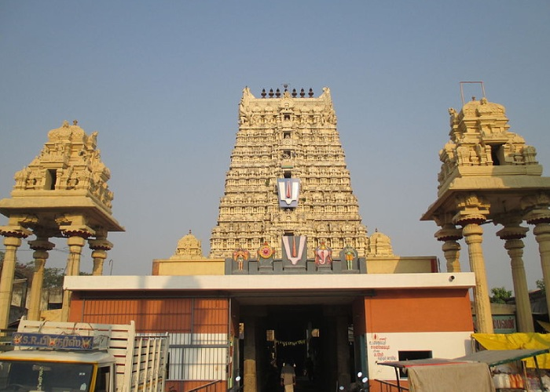

THIRUKOILUR
ULAGALANTHA PERUMAL TEMPLE

It has the third tallest temple tower in tamilnadu measuring 192feet .
The statue og lord vishnu is so beautiful with varnakalapam.
It is also known as trivikrama temple.